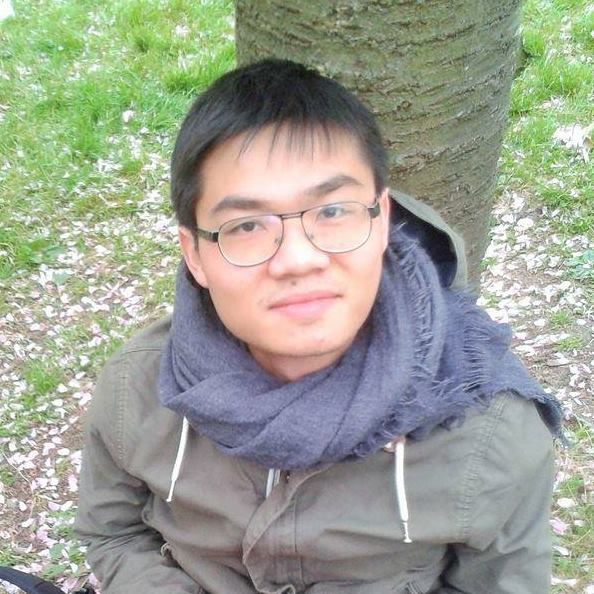

Long Mai is an aspiring software developer. He received his undergraduate degree at Manhattanville College in Purchase, New York and his Erasmus Mundus joint Master degree at the University of Padova, Italy and the University of Paris Sud XI. He was then trained as a PhD student at Sorbonne University, doing research in geometry and number theory and teaching mathematics to college students. In 2020, he ended his PhD studies, continued his programming journey from the early years and is again hungry for adventures in the world of technology. His CV